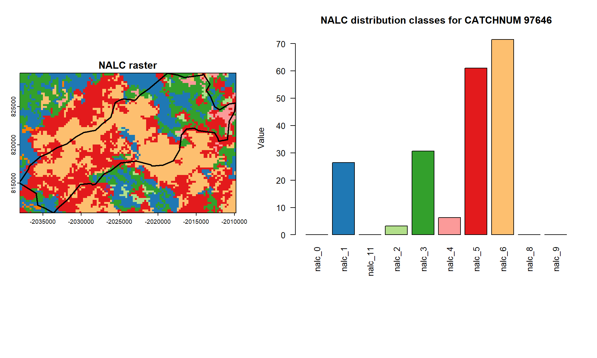

# Load libraries
library(sf)
library(terra)
library(dplyr)
library(here)
library(RColorBrewer)
library(tidyr)
# --------------------------------------
# SET PARAMS --------------------
# --------------------------------------
# Set working directory
dirpath <- here(".")
setwd(dirpath)
source("./R/representation.R")
source("./R/utils.R")
#Set access path
catchments_sf <- st_read(file.path(dirpath, "data/catchments_sample.shp"), quiet = TRUE)
nalc <- rast(file.path(dirpath, "data/nalc_sample.tif"))
# Sum NALC values in each catchments
catchments_nalc <- criteria_to_catchments(
catchments_sf = catchments_sf,
criteria_raster = nalc,
criteria_name = "nalc",
class_vals = unique(nalc))
# subset one catchment
one_catch <- catchments_nalc[catchments_nalc$CATCHNUM == 97646, ]
# Select CATCHNUM and columns starting with "nalc"
one_catch_nalc <- one_catch %>%
st_drop_geometry() %>% # remove geometry
select(CATCHNUM, starts_with("nalc")) %>%
as_tibble()
one_catch_nalc# A tibble: 1 x 11
CATCHNUM nalc_0 nalc_1 nalc_11 nalc_2 nalc_3 nalc_4 nalc_5 nalc_6 nalc_8
<int> <dbl> <dbl> <dbl> <dbl> <dbl> <dbl> <dbl> <dbl> <dbl>
1 97646 0 26.5 0 3.25 30.7 6.35 61.0 71.5 0.0684
# i 1 more variable: nalc_9 <dbl># Visualize the result
# Define a color palette for NALC classes (assuming 0–11)
raster_vals <- sort(unique(values(nalc)))
classes <- paste0("nalc_", raster_vals) # unique raster values
cols <- brewer.pal(length(classes), "Paired") # or any palette you like
#set extent
catch_ext <- st_bbox(one_catch) # xmin, ymin, xmax, ymax
xlim <- c(catch_ext["xmin"], catch_ext["xmax"])
ylim <- c(catch_ext["ymin"], catch_ext["ymax"])
# extract raster value and names
nalc_vals <- st_drop_geometry(one_catch[, grepl("^nalc", names(one_catch))])
nalc_ids <- names(nalc_vals)
#set layout
layout(matrix(c(1,2,
3,0), nrow = 2, byrow = TRUE),
widths = c(3, 4),
heights = c(4, 1))
# --- Left: plot NALC ---
par(mar = c(4,4,2,2)) # wide right margin for legend
plot(nalc, col = cols,
breaks = c(raster_vals - 0.5, max(raster_vals) + 0.5),
legend = FALSE, main = "NALC raster", xlim = xlim, ylim = ylim)
plot(one_catch$geometry, border = "black", col = NA, lwd = 2, add = TRUE)
# --- Right: barplot ---
par(mar = c(5,4,4,2)) # reset margins for barplot
barplot(as.numeric(nalc_vals[1, ]),
names.arg = names(nalc_vals),
las = 2,
col = cols[match(names(nalc_vals), classes)],
main = "NALC distribution",
ylab = "Value")